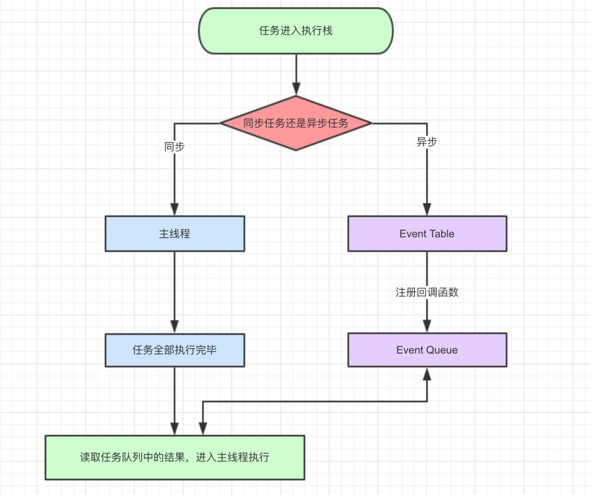
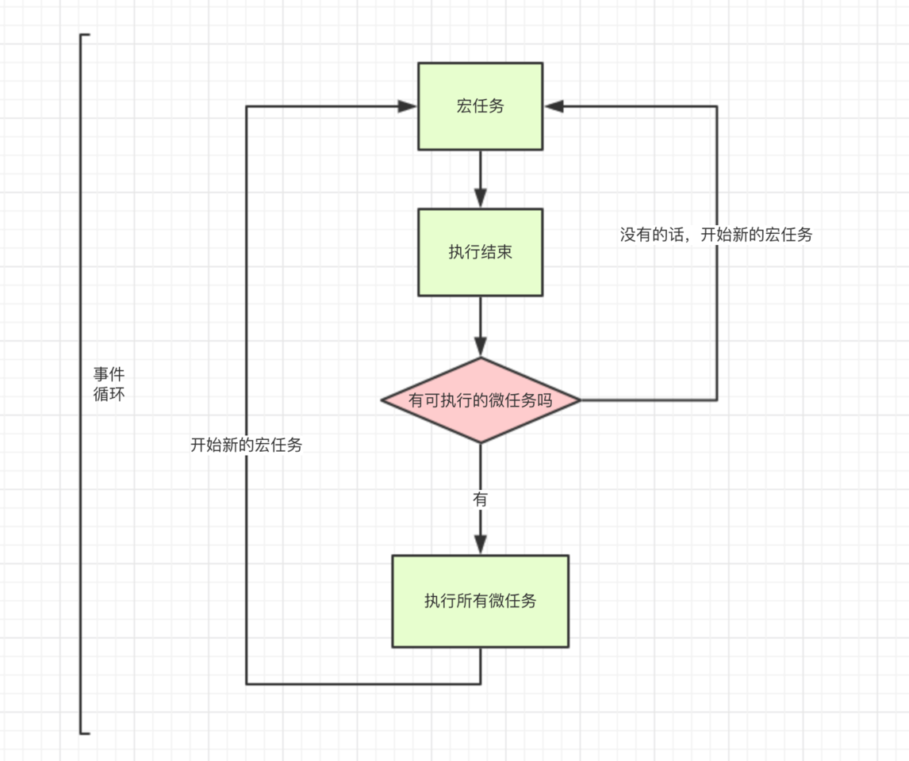
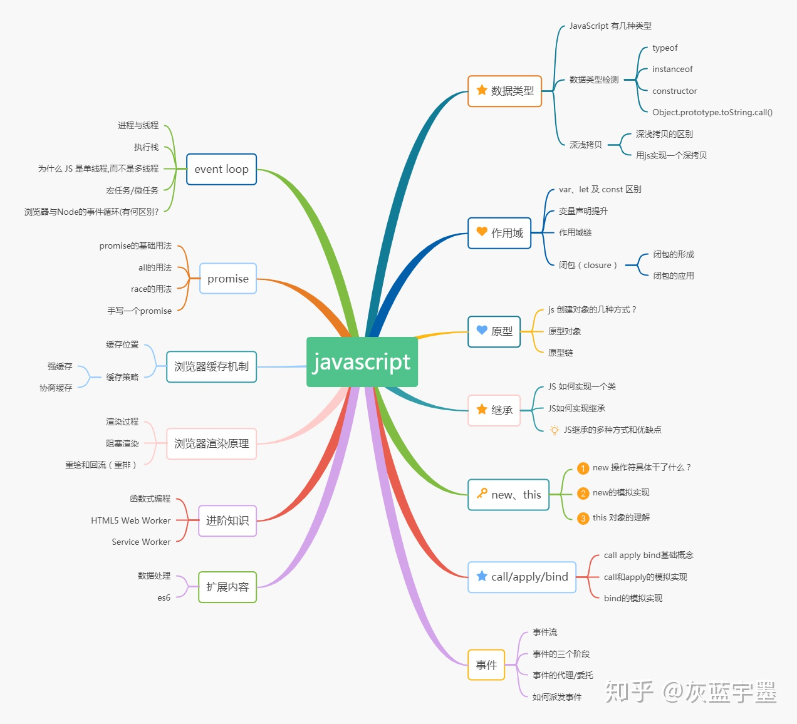

参考《这一次，彻底弄懂 JavaScript 执行机制 - 掘金》
参考《一次弄懂Event Loop（彻底解决此类面试问题）- 掘金》
参考《2020前端面试必会知识点 - 灰蓝宇墨的文章 - 知乎》
关于JavaScript的说明
JavaScript是一门单线程编程语言, 一切的关于JavaScript的多线程都是单线程模拟出来的
不管是什么新框架新语法糖实现的所谓异步, 其实都是用同步的方法去模拟的
JavaScript的执行机制
JavaScript的执行机制: 事件循环(Event Loop)
事件循环是js实现异步的一种方法，也是js的执行机制。
注意区分执行和运行
广义的同步任务和异步任务
- 同步任务
- 异步任务

简单的文字描述图片中的内容:
- 同步和异步任务分别进入不同的执行”场所”，同步的进入主线程，异步的进入Event Table并注册函数。
- 当指定的事情完成时，Event Table会将这个函数移入Event Queue。
- 主线程内的任务执行完毕为空，会去Event Queue读取对应的函数，进入主线程执行。
- 上述过程会不断重复，也就是常说的**Event Loop(事件循环)**。
js引擎存在monitoring process进程，会持续不断的检查主线程执行栈是否为空，一旦为空，就会去Event Queue那里检查是否有等待被调用的函数
示例
参考一下ajax的执行过程
let data = [];
$.ajax({
url:www.javascript.com,
data:data,
success:() => {
console.log('发送成功!');
}
})
console.log('代码执行结束');- ajax进入Event Table，注册回调函数success。
- 执行console.log(‘代码执行结束’)。
- ajax事件完成，回调函数success进入Event Queue。
- 主线程从Event Queue读取回调函数success并执行。
常用 setTimeout、setInterval 函数
setTimeout
平时经常使用setTimeout函数定时执行一些业务
setTimeout(() => {
console.log('延时3秒');
},3000)随着setTimeout的越来越多, 问题也就来了
setTimeout(() => {
console.log('延时3秒');
},3000);
console.log('---> 执行:console');输出
// ---> 执行:console
// 延迟3秒这个结果是正确的, 但是我们稍微改一下代码
setTimeout(() => {
task()
},3000);
sleep(100000); // 这里假设执行业务代码耗时比较长这个时候执行task()输出时间就不止延迟3秒了,
task()进入Event Table并注册,计时开始。- 执行
sleep函数，很慢，非常慢，计时仍在继续。 - 3秒到了，计时事件timeout完成，
task()进入Event Queue，但是sleep也太慢了吧，还没执行完，只好等着。 sleep终于执行完了，task()终于从Event Queue进入了主线程执行。
setTimeout函数的定义是, 函数等待定义的时间之后才进入Event Queue, 又因为是单线程任务要一个一个执行，如果前面的任务需要的时间太久，那么只能等着，导致真正的延迟时间远远大于3秒
setInterval
setInterval跟setTimeout效果差不多, 区别是setInterval会每隔指定的时间将注册的函数置入Event Queue，如果前面的任务耗时太久，那么同样需要等待.
唯一需要注意的一点是，对于setInterval(fn,ms)来说，我们已经知道不是每过ms秒会执行一次fn，而是每过ms秒，会有fn进入Event Queue。一旦setInterval的回调函数fn执行时间超过了延迟时间ms，那么就完全看不出来有时间间隔了。
任务还有更精细的定义 宏任务/微任务
- macro-task(宏任务)：包括整体代码script，setTimeout，setInterval
- micro-task(微任务)：Promise，process.nextTick
不同类型的任务会进入对应的Event Queue，比如setTimeout和setInterval会进入相同的Event Queue。
除了传统的定时器setInterval和setTimeout外, 我们还要了解的Promise和process.nextTick
Promise可以参考阮一峰老师的Promise讲解process.nextTick类似node.js版的setTimeout
事件循环的顺序，决定js代码的执行顺序。进入整体代码(宏任务)后，开始第一次循环。接着执行所有的微任务。然后再次从宏任务开始，找到其中一个任务队列执行完毕，再执行所有的微任务。
举例:
setTimeout(function() {
console.log('setTimeout');
})
new Promise(function(resolve) {
console.log('promise');
}).then(function() {
console.log('then');
})
console.log('console');- 这段代码作为宏任务，进入主线程。
- 先遇到setTimeout，那么将其回调函数注册后分发到宏任务Event Queue。(注册过程与上同，下文不再描述)
- 接下来遇到了Promise，new Promise立即执行，then函数分发到微任务Event Queue。
- 遇到console.log()，立即执行。
- 好啦，整体代码script作为第一个宏任务执行结束，看看有哪些微任务？我们发现了then在微任务Event Queue里面，执行。
- ok，第一轮事件循环结束了，我们开始第二轮循环，当然要从宏任务Event Queue开始。我们发现了宏任务Event Queue中setTimeout对应的回调函数，立即执行。
- 结束。
关系图

一段较复杂的javascript代码, 分析一下它的输出
console.log('1');
setTimeout(function() {
console.log('2');
process.nextTick(function() {
console.log('3');
})
new Promise(function(resolve) {
console.log('4');
resolve();
}).then(function() {
console.log('5')
})
})
process.nextTick(function() {
console.log('6');
})
new Promise(function(resolve) {
console.log('7');
resolve();
}).then(function() {
console.log('8')
})
setTimeout(function() {
console.log('9');
process.nextTick(function() {
console.log('10');
})
new Promise(function(resolve) {
console.log('11');
resolve();
}).then(function() {
console.log('12')
})
})第一轮事件循环流程分析如下：
- 整体script作为第一个宏任务进入主线程，遇到console.log，输出1。
- 遇到setTimeout，其回调函数被分发到宏任务Event Queue中。我们暂且记为setTimeout1。
- 遇到process.nextTick()，其回调函数被分发到微任务Event Queue中。我们记为process1。
- 遇到Promise，new Promise直接执行，输出7。then被分发到微任务Event Queue中。我们记为then1。
- 又遇到了setTimeout，其回调函数被分发到宏任务Event Queue中，我们记为setTimeout2。
| 宏任务Event Queue | 微任务Event Queue |
|---|---|
| setTimeout1 | process1 |
| setTimeout2 | then1 |
上表是第一轮事件循环宏任务结束时各Event Queue的情况，此时已经输出了1和7。
我们发现了process1和then1两个微任务。
- 执行process1,输出6。
- 执行then1，输出8。
第一轮事件循环正式结束，这一轮的结果是输出1，7，6，8。
第二轮时间循环从setTimeout1宏任务开始:
- 首先输出2。接下来遇到了
process.nextTick()，同样将其分发到微任务Event Queue中，记为process2。 new Promise立即执行输出4，then也分发到微任务Event Queue中，记为then2。
| 宏任务Event Queue | 微任务Event Queue |
|---|---|
| setTimeout2 | process2 |
| then2 |
第二轮事件循环宏任务结束，我们发现有process2和then2两个微任务可以执行。
- 输出3。
- 输出5。
第二轮事件循环结束，第二轮输出2，4，3，5。
第三轮事件循环开始，此时只剩setTimeout2了，执行。
- 直接输出9。
- 将process.nextTick()分发到微任务Event Queue中。记为process3。
- 直接执行new Promise，输出11。
- 将then分发到微任务Event Queue中，记为then3。
| 宏任务Event Queue | 微任务Event Queue |
|---|---|
| process3 | |
| then3 |
第三轮事件循环宏任务执行结束，执行两个微任务process3和then3。
- 输出10。
- 输出12。
第三轮事件循环结束，第三轮输出9，11，10，12。
整段代码，共进行了三次事件循环，完整的输出为1，7，6，8，2，4，3，5，9，11，10，12。*(请注意，node环境下的事件监听依赖libuv与前端环境不完全相同，输出顺序可能会有误差)*
其他
javascript学习路线
